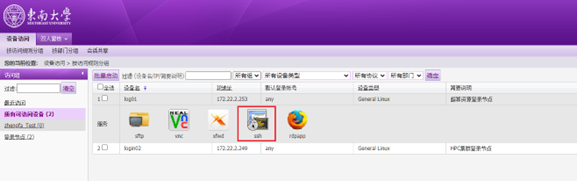
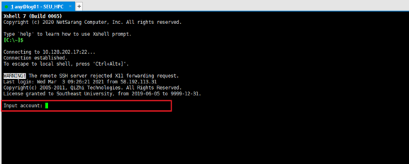
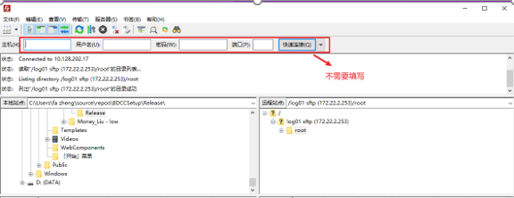
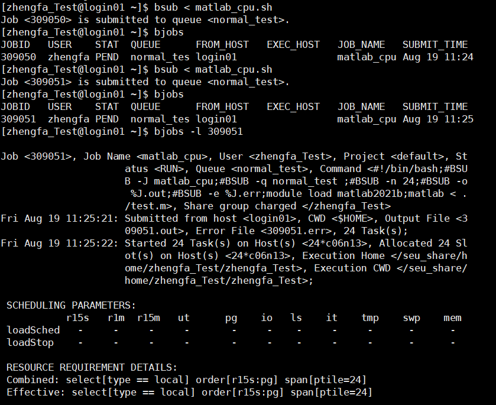
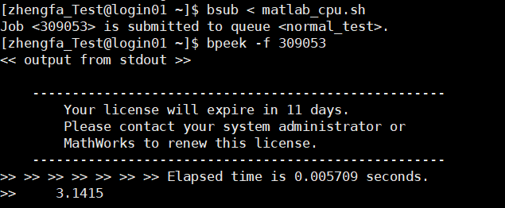
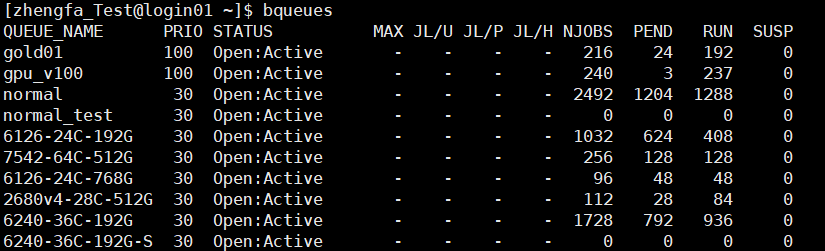
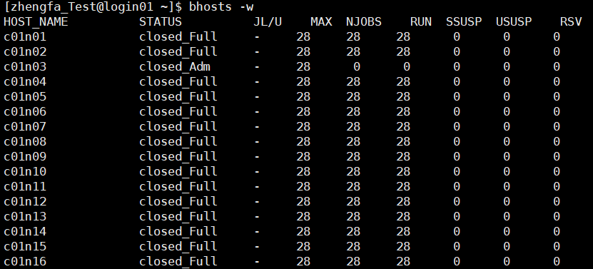
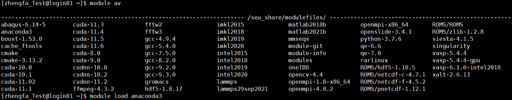

二、高性能计算平台使用
Contents
二、高性能计算平台使用#
提示
高性能计算平台操作系统使用的是Linux CentOS，作业调度系统使用的是IBM LSF。
1. 登录#
点击login01/login02的SSH图标。
输入邮件中的用户名和密码。
2. 文件传输#
点击login01/login02的sftp图标，自动打开Filezilla并连接登录节点。
3. 队列介绍#
高性能计算平台目前有以下队列:
gpu_v100（GPU队列，9个节点，每张显卡32G显存）
normal（CPU队列，54个节点，单个节点28核128G内存）
6126-24C-768G（CPU队列，2个节点，单个节点24核768G内存）
2680v4-28C-512G（CPU队列，3个节点，单个节点28核512G内存）
6240-36C-192G（CPU队列，27个节点，单个节点36核192G内存）
6240-36C-192G-S（CPU队列，1个节点，单个节点36核192G内存）
6126-24C-192G（CPU队列，17个节点，单个节点24核192G内存）
7542-64C-512G（CPU队列，4个节点，单个节点64核512G内存）
normal_test(CPU队列，1个节点，24核192G内存)
gold、6240-36C-192G-S为非公共队列，普通用户无法使用
重要
normal_test为快速验证队列，方便新用户检查脚本是否正确，每隔10min会自动杀掉所有任务。
重要
6240-36C-192G-S队列不对任务最小核数进行限制，适合仅需少量核运行的任务，需要单独联系管理员开通权限。
4. 常用命令#
bsub 提交作业#
可以通过命令行或脚本的方式提交作业，推荐使用 脚本方式 提交。bsub常用参数：
-n 作业需要CPU核数
-q 作业提交队列
-J 作业名称
-o 标准输出文件
-e 标准错误输出文件
-gpu 显卡相关参数
-gpu的各个参数用:分隔，常用参数如下：
num=number：每台主机需要GPU的数量。
mode=shared|exclusive_process：GPU运行模式，shared对应NVIDIA DEFAULT、exclusive_process对应NVIDIA EXCLUSIVE_PROCESS。
aff=yes|no：是否进行GPU-CPU亲和性绑定。
命令行方式样例：
例：提交一个CPU作业
bsub -J case -q normal_test -n 24 -o %J.out -e %J.err "module load anaconda3;python3 XXX"
例：提交一个GPU作业
bsub -J case -q gpu_v100 -gpu "num=1:mode=exclusive_process:aff=yes" "module load anaconda3;python3 XXX"
重要
推荐用户使用conda命令创建自己的环境并安装需要的包（优先使用conda install 安装，pip可能部分包不完全兼容）。使用时在脚本中激活环境，如不指定则使用默认base环境。
脚本方式样例：
bsub < job.lsf
job.lsf是脚本文件，文件内容参考下面样例:
例：CPU作业脚本
#BSUB -J case
#BSUB -q normal_test
#BSUB -n 24
#BSUB -o %J.out
#BSUB -e %J.err
module load anaconda3
python3 XXX
例：GPU作业脚本
#BSUB -J case
#BSUB -q normal_test
#BSUB -n 24
#BSUB -o %J.out
#BSUB -e %J.err
#BSUB -gpu "num=1:mode=exclusive_process:aff=yes"
module load anaconda3
python3 XXX
重要
GPU作业不需要指定CPU核，系统会自动根据申请得卡按1：3分配CPU核。
重要
GPU作业不要在代码中指定GPU设备号，不要在脚本或代码中为CUDA_VISIBLE_DEVICES指定具体的值，这会导致任务抛出RuntimeError: CUDA error: all CUDA-capable devices are busy or unavailable。
Python为例：系统会自动将申请的GPU设备号赋给环境变量os.environ[‘CUDA_VISIBLE_DEVICES’]，可以在代码中通过os.environ[‘CUDA_VISIBLE_DEVICES’]获取分配的GPU设备号。
bjobs 查看作业#
bjobs 查看自己提交的任务，bjobs -l jobid 查看任务详情。
bkill 结束作业#
bkill 作业ID 杀掉定的作业。
bpeek 查看作业输出#
bpeek -f jobid 查看任务日志，显示处于运行时作业的标准输出和标准错误输出信息。
bqueues 查看队列#
bqueues查看全部队列，bqueues -l 队列名查看队列详情。
NJOBS显示的是当前队列的总核数（排队核数+运行核数），PEND显示的是当前队列排队的核数，RUN显示的是当前队列运行的核数，提交任务时请自行选择合适的队列。
bhost 查看节点#
bhosts查看全部节点信息，bhosts -w 查看详细状态。
其中status有四个状态，ok表示可以接受新提交任务；closed_Full表示已经运行满任务，不能接受新提交任务；closed_Adm表示节点已下线；unavailable表示节点不可用。
module 加载软件#
module av查看可用软件，module load xxx加载所需软件。
